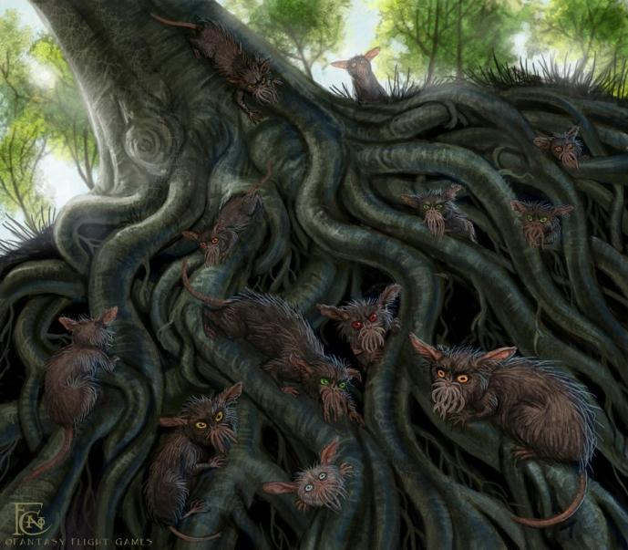

Многочисленные норы и пустые стволы больших деревьев в Зачарованном лесу населяют маленькие серые существа, зовущиеся зугами. Хитрые и скрытные, они собираются у костров в чаще леса возле огромных серых камней и рассказывают о том, что им удалось узнать и повидать, когда, движимые любопытством, они прокрадываются незаметными тенями в расположенные у леса поселения людей.
Зуги также делают диковинное вино из древесного сока, который добывают из необычного дерева, выросшего из когда-то упавшего с Луны семечка. Самые старые и мудрые из этих существ хранят немало подслушанных тайн Сновидческого мира, и путешественник, выучивший их стрекочущий язык, может договориться с ними и многое узнать. Но ему следует быть осторожным: хоть зуги и питаются в основном древесными грибами, они не прочь полакомиться теми, кто забрел в их лес случайно ночью, будь то неосторожный ультарский кот или же человек.
Введены Г. Ф. Лавкрафтом в повести «Сновидческие искания неведомого Кадата» (The Dreams-Quest of Unknown Kadath, 1927).
